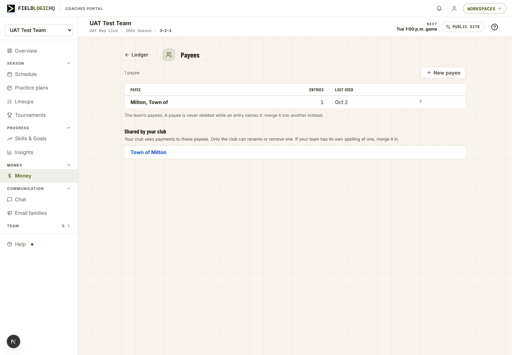
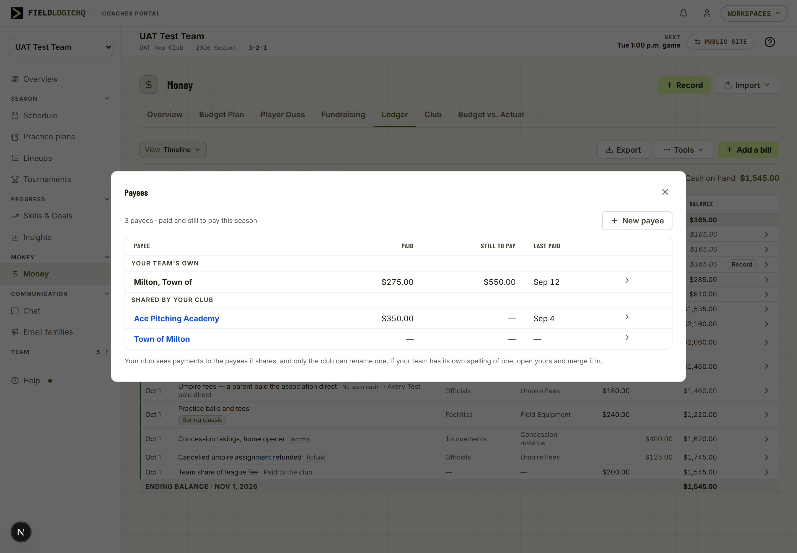
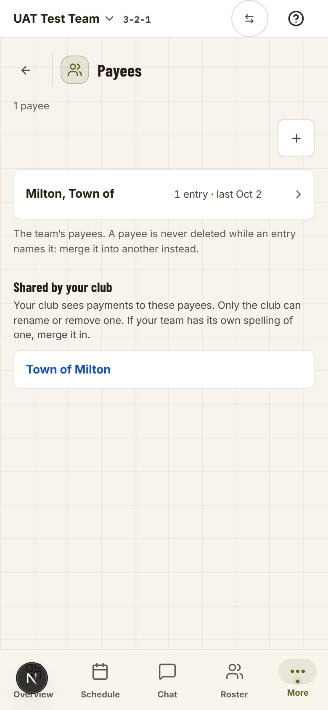
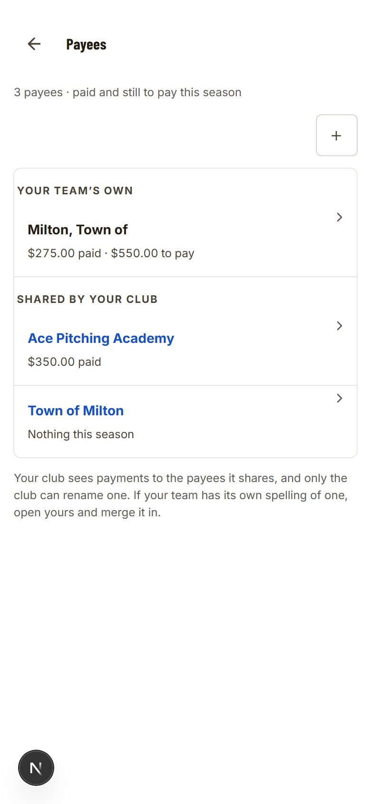
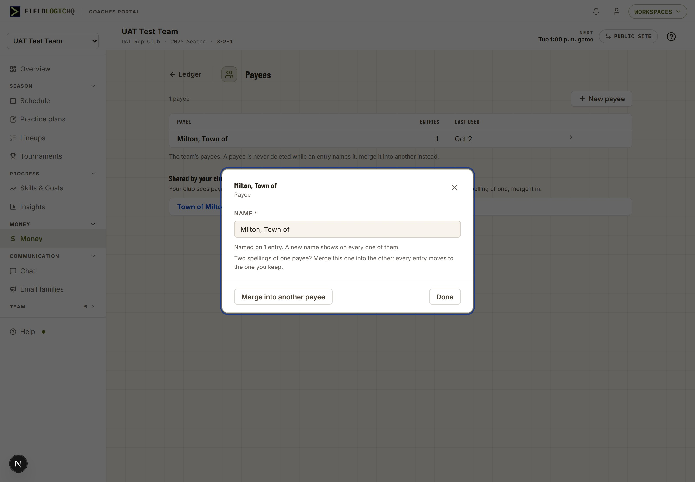
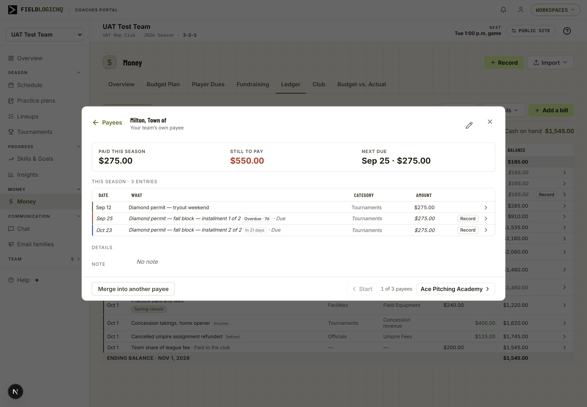
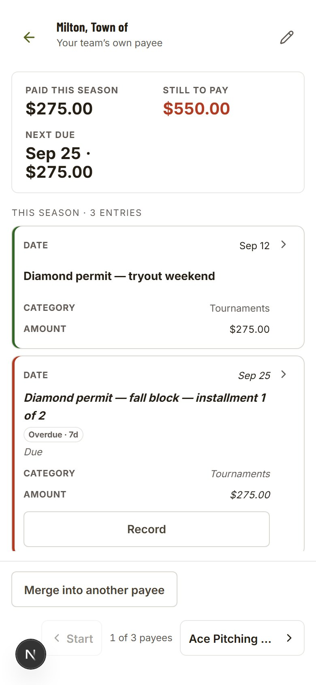
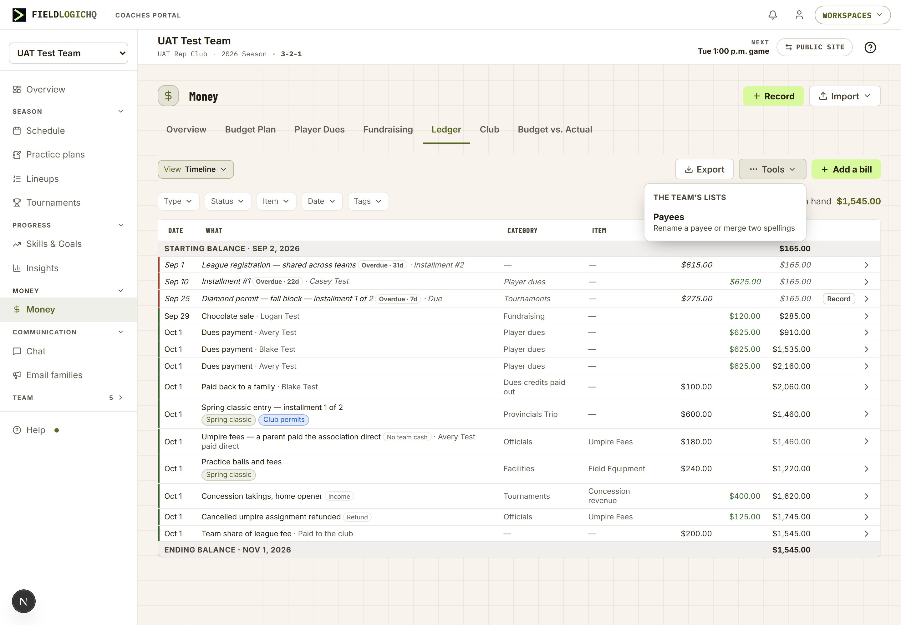
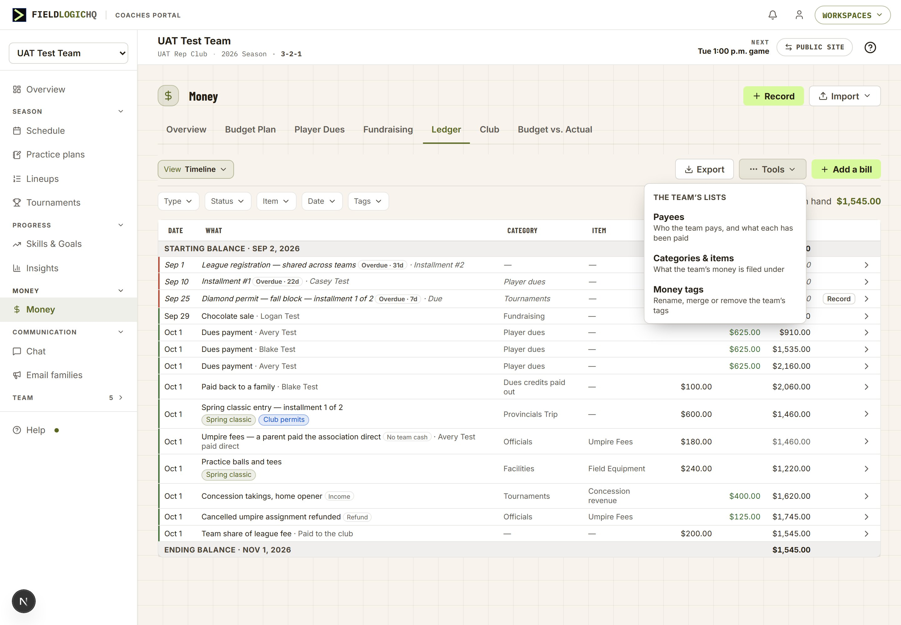
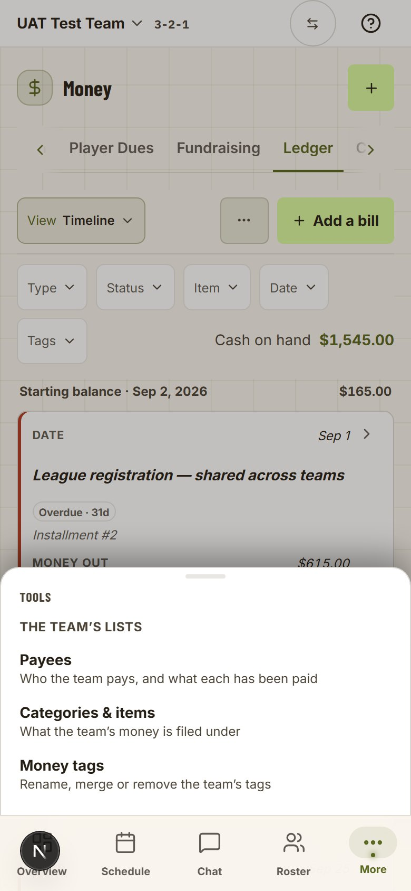

Two Ledgers that were ruled to read alike
On 2026-09-30 you ruled that the club’s book reads exactly like the coach’s Ledger, with two deliberate differences. Laid side by side, five more differences show up that nobody decided. Each numbered marker opens what the screen does today and what the proposal changes.
- Row dates. “Sep 1, 2026” on the coach’s, “Aug 12” on the club’s.
- Balance rows. The club’s say which day they stand on; the coach’s don’t.
- How a row opens. One arrow on the club’s; a pencil or a worded button on the coach’s.
- Phone cards. Two different card layouts for the same kind of row.
- Payees. The club can tidy its payee list; a team can’t tidy its own.
Coach · Money › Ledger
UAT Test Team, 1440 × 1000, warm theme, live 2026-10-01
Club · Accounting › Ledger
UAT Rep Club General ledger, Date set to Last 90 days, 1440 × 1000, live 2026-10-01
Sizes are the same. Measured at one window width, both tables print 12px text and 28–29px rows. The club’s page is about 70px narrower, so its longer descriptions wrap to two lines more often. Nothing in this project changes either size.
The coach’s Ledger, before and after
The after frame is the live page with the four changes applied in it, so nothing here is redrawn by hand. Green markers show where each change lands.
Coach · Money › Ledger
Coach · Money › Ledger

Superseded in round 2: the Payees button drawn here moves behind a Tools menu (D6, screen 7), which also draws the whole proposed coach Ledger in one frame.
Revised 2026-10-02 (owner): the names are drawn bold here. They keep the coach’s regular weight, as they read today, and the club’s Ledger drops its bold to match (screen 3).
Unchanged, on purpose: the coloured edge on each row (paid, scheduled, overdue), the Item column, the Tags filter and Cash on hand (screen 7 says why). The two italic rows at the top are unpaid installments; on those rows a Record button would sit beside the arrow, the one button a ledger row keeps (ruled 2026-09-04). This fixture’s two are the club’s bill and a family’s dues, not one of the team’s own bills, so neither shows one here.
The club’s Ledger changes in two places
The club’s book already does decision 1 and opens its rows as decision 3 asks. It gains the year on its balance rows, so both books state their period the same way, and its note under the table goes, because the dated balance rows now say what it explains. Revised 2026-10-02 (owner): its names lose their bold, so both books set the What in the coach’s regular weight.
Club · Accounting › Ledger
Club · Accounting › Ledger

Not yet in this frame: the names here are still bold. Under the 2026-10-02 revision the build sets them in the coach’s regular weight; each name stays a button, so a keyboard still opens the line from it.
A row that came from another tab opens a window that says where it lives
On the coach’s Ledger, a dues payment, money a fundraiser brought in or a payment to the club is written by another tab. Today those rows don’t open at all; a worded button in the last cell takes you to that tab. Under decision 3 the row itself opens, and what it opens is the window the club already shows for a line another screen wrote.
A line an allocation wrote

The coach’s version, row by row: a Dues payment · Avery Test row opens “Dues payment · Oct 1”, with the amount, category, the family and how it was paid, the sentence “Recorded on Player Dues. Change it there, and the Ledger follows.” and the button Open Player Dues. A fundraiser’s row names Fundraising; a payment to the club names Club. A typed entry or a bill opens exactly as it does today. New
One card for a ledger row, on both phones
The coach’s phone card is the older of the two. The club’s was built on 2026-10-01 to the written standard (a card per entry, register K-25). Under decision 4 the coach’s cards take the club’s shape, so the right-hand frame is the target layout.
Coach · Ledger, 390px

Club · Ledger, 390px

The first club card is grey only because the capture’s pointer rested on it. On the coach’s card, an unpaid installment keeps its Record button, the one button a ledger row keeps.
Every team can tidy its own payees
Each team has its own payee list. A coach can add a payee while entering money and can never rename or merge one. The club got this page in Stage 3a for its own list. Under decision 5 the coach’s Money gets the same page for the team’s list, opened from Tools (D6, screen 7). Corrected in round 2: in a club, a coach’s picker also lists every one of the club’s payees today, under “Organization”; decision 7 (screen 8) changes that.
Accounting › Ledger › Payees

The coach’s version: the same page under Money, its back arrow to Ledger, listing the team’s payees only, with the note “The team’s payees only: the club’s are the club’s.” Anyone who can enter the team’s money can rename or merge. On a phone the door sits at the foot of the View menu, as the club’s sits in its Book menu. The payee picker in the money form gains a last row, Manage payees. New
Round 3 (open, screens 10 and 11): the coach’s Payees becomes a window over the Ledger rather than a page, and a payee opens as a record of its money.
Payees sits behind Tools, and at the foot of the payee picker
A tab is a view of the book you work in (ruled 2026-09-30); Payees is a list you tidy a few times a season, so it is not a tab. The 2026-10-01 ruling puts rare tools behind Tools (⋯). Both Ledgers end with the same toolbar: the book or view menu, Export, Tools, then the one lime add. The payee picker’s last row, Manage payees…, is the other door, where a duplicate is noticed (screen 8 draws it).
Club · Accounting › Ledger, Tools open

Transfer moves in too: it is a rare tool on a club book. The Payees button drawn in round 1, and built on dev 2026-10-01, moves here when this is built.
Coach · Money › Ledger, the whole proposal in one frame

The Tools menu is the portal’s own menu (the one Import opens), so it carries a heading per group. It holds one tool today; it is where the next rare coach tool goes rather than a new button. Round 3 (open, screen 12): the team’s other two lists join it. Revised 2026-10-02: the names are drawn bold here; they keep the coach’s regular weight.
The club chooses which payees its teams use, and sees what the teams recorded paying them
Found while drawing: in a club, every coach’s picker already lists every club payee, under “Organization”, with no choice for the club and no notice to the coach. Decision 7 makes sharing a choice and makes it visible. It was logged with /strategy on 2026-10-02 because it widens what a club can see of a team’s money.
Coach · Add a bill › Payee

Coach · Add a bill › Payee

“Shared by your club” is the form’s own word for the club’s colour, already in the tag legend under the picker. Ace Pitching Academy is an example payee added for the drawing.
Club · Accounting › Payees

The note under the table changes with it: today it says “The club’s payees only: a team’s payees are its coaches’.”
A shared payee’s window
3b report
Team names are the test club’s nine teams; the two amounts are examples. A team merges its own duplicate into the club’s on its Payees page (decision 5): the payee it keeps can be one of the club’s shared payees, listed first and marked as the club’s.
Two transition rules to decide
- No retroactive view. The club sees only payments recorded after the picker began saying the club sees them. Payments made under today’s silent “Organization” heading never surface.
- Nothing vanishes at launch. A club payee that any team has already used starts shared; every other club payee starts as the club’s own.
What stays different, and why
The table standard’s rule is that a difference between two tables is either written down with its reason or it is a bug. These are the ones with a reason; the build records them in the exception register so the next comparison starts from this list.
| Difference | Coach | Club | Why it stays |
|---|---|---|---|
| The figure at the strip’s edge | Cash on hand | Balance | Ruled 2026-09-30: a club book’s balance is not the club’s cash. |
| The Date filter opens on | Around today | This month | Ruled 2026-09-30: a club book carries no money still to come, and a treasurer works by the month. |
| Item column, Tags filter | Yes | No | A club entry carries no budget item and no tags. Whether it should is Stage 3b’s question (C09). |
| The menu left of the toolbar | View (three views of one book) | Book (several books) | Different jobs: a team has one book; a club has several. |
| Transfer | No | Yes | Transfer moves money between the club’s own books. A team has one book. |
| Page header | Icon, “Money”, Record and Import | “Accounting”, no icon, no buttons | Each portal’s header rule: the coach’s hub header carries the hub’s own doors; the admin’s draws no icon and keeps a create in the tab’s toolbar. |
| Coloured edge on a row | Paid, scheduled, overdue | None | A coach’s row can be scheduled or overdue. A club line is posted, pending or void, and pending carries its own chip. |
| “No team cash” chip | Yes | No | A family paying a team bill directly. The club’s book has no such line. |
| Page width | About 1200px | About 1090px | Each portal’s page width. The club’s longer descriptions wrap a little more often. |
Payees opens over the Ledger, not on a page of its own
Asked during the §258 walk: “do we need to open a new page for this? wouldn’t a drawer be in line with our portal standard?” Today Tools › Payees, and the payee picker’s Manage payees…, leave the Ledger for a page. The picker’s door sits inside the bill window and the Add a bill form, so following it from there drops the form, or asks “Leave without saving?”, which is the trip you refused for tags (2026-09-01). The team’s other two lists already open over the screen you are on. Under decision 8, Payees is a window over the Ledger: the list first, then a payee inside the same window (screen 11).
Coach · Money › Ledger › Payees, a page
built on dev 2026-10-02, not on production; 1440 × 1000, warm theme
Payees, a window over the Ledger

Examples in this drawing: Ace Pitching Academy (as in round 2) and a $275.00 payment to Milton, Town of on Sep 12. The test team’s real bill to Milton has nothing paid yet. Restyled
From the payee picker, inside an open bill or the Add a bill form, the same window opens over the form and closes back to it with the typing kept, as Categories & items already does from the Filing picker. The page goes: it was built on dev on 2026-10-02 and has not reached production, so nothing a customer uses is removed.
Payees page, 390px

Payees window, 390px

On a phone each payee is its name with its figures on a line under it (owner, 2026-10-02: “put the subtext under the name on the phone so we aren’t squishing the names”), the framed card the practice libraries already use. Each band is a plain line between the rows, the way the Ledger’s balance lines already are. The club’s Payees has the same two problems (its picker’s Manage payees… is inside its Add entry window), so the recommendation is the same change there; it is not drawn yet.
A payee opens to read: what the team paid it, what is still to pay, and the entries behind both
Asked during the §258 walk: “I see entries of 1 but when I click it all I can do is change the name.” A payee stores only a name and a note; there are no contact details to show, and none are proposed. What it can show is its money. Under decision 9 a payee is a record like any other (your 2026-10-01 standard): it opens to read, and one pencil in its head turns the name and note into a form.
A payee, opened from the Payees page

The payee’s record, inside the Payees window

The rows are the Ledger’s rows: the same coloured edge (paid, overdue, due), Record on an unpaid installment, and a click opens what it opens on the Ledger, the bill’s window, with Back returning to the payee. Merge into another payee sits in the foot because a bill names this payee; Delete this payee takes its place only when nothing does. Prev and Next walk the list. A shared payee opens the same way, without the pencil and the merge, its head saying it is the club’s. New
Example in this drawing: the Sep 12 payment, so the record shows a paid row beside the real overdue and coming installments.
The payee’s record, 390px

One more ask, and a defect found while drawing
- This season only. The list and the record count and show this season’s money. A payee kept from year to year shows what this season paid it.
- The bill window shows the payee as typed, not as it is. A rename or a merge never reaches it, and a bill with no typed name shows an empty Payee and loses its payee on the next edit there. Fixed regardless of the ruling.
Tools holds the three lists a Ledger entry is filed by
Asked during the §258 walk: “if the payees is the only thing in the tools dropdown then do we need a tools dropdown?” A menu with one item costs a click for nothing, and the reason rare tools went behind Tools (2026-10-01) was a crowded phone toolbar: a ⋯ and a Payees button take the same space. But a coach also tidies two other lists every Ledger entry is filed by, and reaches them today only from Budget, Team settings or inside a picker. Under decision 10, Tools holds all three.
Coach · Money › Ledger, Tools open

Coach · Money › Ledger, Tools open

The Tools sheet, 390px

Each opens its own window over the Ledger: Categories & items its existing window (the one the Filing picker opens), Money tags its existing side sheet, Payees screen 10’s window. They are two different frames today, and this round does not change that. Their other doors stay. The alternative: keep Tools for Payees alone and make it a plain Payees button, one click instead of two, with the two Ledgers’ toolbars then ending differently.